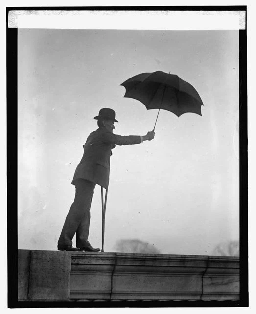

「brolly」とは、イギリス英語のスラングで「傘」を意味する。
実は、これで「umbrella」の略語だ。
ふつう単語を省略する際は、頭か末尾かを残すものだが、「brolly」の場合、頭の「um」と末尾の「a」を削って、残った真ん中の「brell」から来ているのが大きな特徴である。
英語の語源辞典「Online Etymology Dictionary」によれば、「brolly」は1870年前後から使われているそうだ。「umbrella」の中央部「brell」の母音が変化し、末尾に「-y」がついて、「brolly」になったという。
この「brolly」、イギリスでは広く通じる言葉で、ほとんどのイギリス人が知っていると言っても過言ではない。
Don't forget your brolly. It's going to rain.（傘を忘れないで。雨が降りそうだから）
このような、ごく一般的な日常語である。一方、アメリカではあまり知られていないようだ。
なお、「brolly」のように、単語を縮めて「-y」や「-ie」をつける言い方は、イギリス英語の得意とするところだ。たとえば、「television」を縮めた「telly」は有名な例である。
アメリカ英語で傘は？
イギリス英語に「brolly」があるように、アメリカ英語にも傘を指す独特のスラングがあった。それが「bumbershoot」だ。
「bumbershoot」とは変わった単語だが、これは「umbrella」と「parachute（パラシュート）」を掛け合わせた言葉らしい。なぜパラシュートかというと、開いた傘がパラシュートに似ているという単なる見た目ゆえのようだ。「
ただし、この言葉は定着しなかった。19世紀末に誕生し、20世紀初頭までは広く使われていた言葉だが、それもせいぜい1930年代までだった。
今では、本気で傘のことを「bumbershoot」と呼ぶ人は、アメリカにもほとんどいないようだ。
そのせいだろうか。この言葉は確かにアメリカ発祥なのだが、アメリカ人にはこれをイギリス英語のスラングだと思い込んでいる人が少なくないようだ。
「bumbershoot」の文献上の初出は、1876年発行のアメリカの新聞だ。生まれも育ちもアメリカであり、イギリスのメディアや出版物で使用された例は確認できない。
ところが、1940年ごろから、アメリカで「これはイギリスのスラングだ」という思い込みが広まっていく。
きっかけの一つとされるのが、当時のイギリス首相ネヴィル・チェンバレン（Neville Chamberlain）の姿である。
1938年、ナチス・ドイツとの交渉に臨んだ際、チェンバレンは傘を手にしていた。その姿が新聞や写真で広く伝えられ、以降、風刺漫画も彼を描くとき決まって傘を持たせるようになった。
そこから、「傘を持つイギリス紳士」というイメージがアメリカで広まり、それに伴い、傘と言えばイギリスという妙な固定観念も生まれたと考えられる。

イギリス英語の「brolly」も、アメリカ英語の「bumbershoot」も、もとをたどれば、どちらも「umbrella」をくだけて言い換えた俗語に過ぎない。
一方は今も現役で使われる日常語として定着しているのに、もう一方はほとんど死語となっているのは不思議な話だ。
ただし、「bumbershoot」という言葉自体が消えたわけではない。アメリカには、この名を冠する大きな音楽・芸術フェスティバルがあり、今も続いている。傘を指す言葉としては忘れられても、別の形では生き残っているようだ。
参考
- brolly, Online Etymology Dictionary
- brolly, Collins English Dictionary
- bumbershoot, Merriam-Webster
- bumbershoot, n., Oxford English Dictionary
- bumbershoot, Wiktionary
- Cheerio, Bumbershoot! The Word Is Not Actually British for Umbrella, Slate
- Bumbershoot